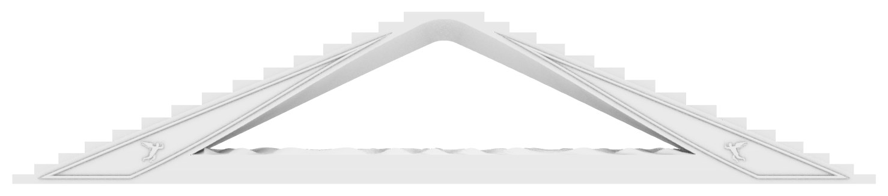
Ultra High Performance Concrete Beam
Using Topology Optimization
For Three Point Bending
An Engineering Student Design Competition Submission
With Sean Szabo
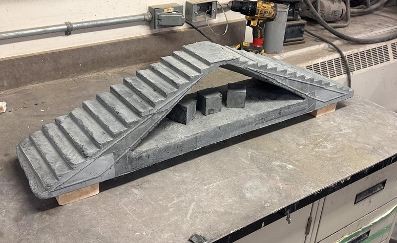
The Fourth International Interactive Symposium on Ultra-High Performance Concrete (4IIS-UHPC) called on student teams to design a concrete beam for three point bending, with the added criteria that it must fail at a specific ultimate load of 71.2 kN (16 kips). Our approach was to design a beam with the least amount of material needed to reach the ultimate load. The top most part of the beam was designed to bear the maximum compressive stresses while the bottom of the beam carried all the tensile stresses and was engineered to experience a ductile failure mode when the ultimate load was reached.
1. Topology Optimization
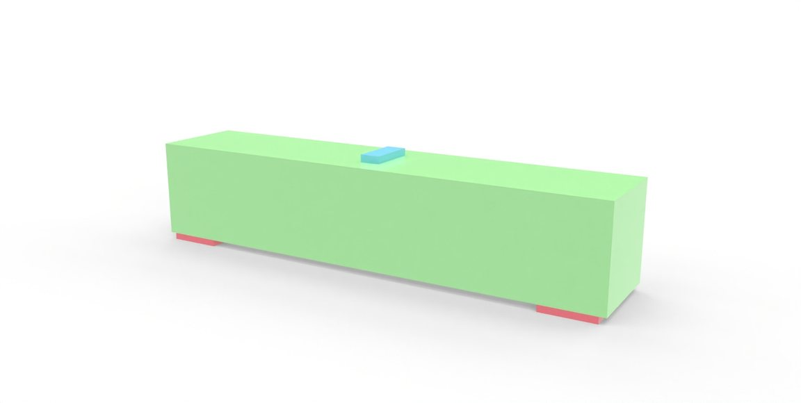
Design DomainLoadSupportsUsing the Topos plugin in Grasshopper, a topology optimization was done based on the design domain given to us from the competition. Since the Topos plugin runs a basic SIMP algorithm, only the compressive element of the beam was able to be generated, and thus we had to remodel the beam afterwards.
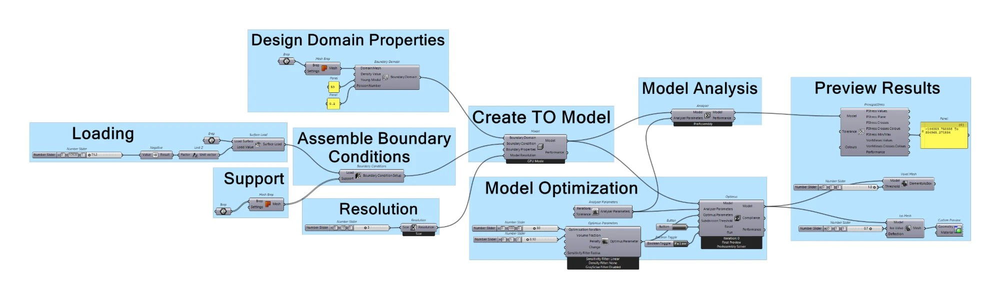
| Load | Supports | Young Modulus | Poisson Number | Resolution | Iterations | Volume Fraction | Penalty | Change | Sensitivity Radius |
|---|---|---|---|---|---|---|---|---|---|
| 71.2 kN | Pin-pin | 50 GPa | 0.2 | 3 | 30 | 0.10 | 2 | 0.05 | 1.5 |
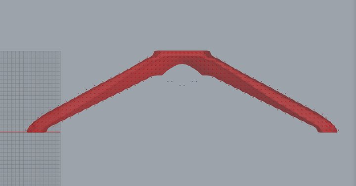
Side view of TO beam
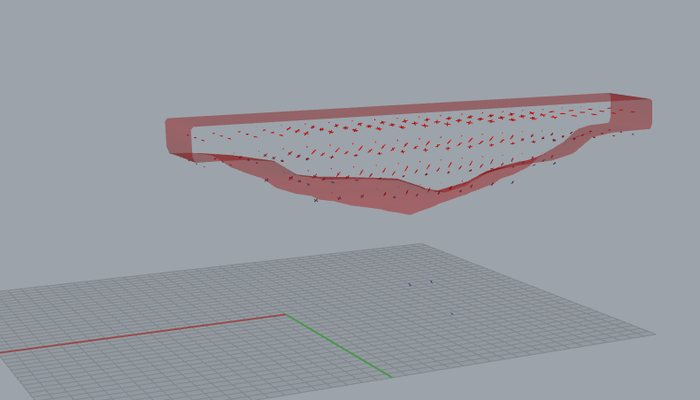
Cross section at the middle
The results pointed to a design with the shape of a triangular truss with a triangular cross section. Both elements were taken into consideration when modeling the final beam.
2. Beam Modeling
Modeling was done using Grasshopper to create a computational script with parameters that can be modified to further optimize the design. The key inputs for the grasshopper script include the support footing dimensions, the proportions and area of the cross sections, the type of beam curvature, and the type of rebar used. The outputs are the UHPC element model and its dimensions.
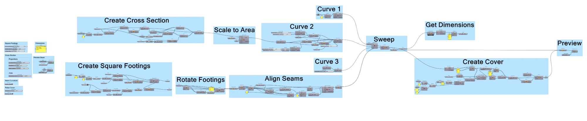
The parameters of focus are the cross-sectional area of the beam at the center and the type of curvatures to take into consideration. The first curvature is an arch, the third is a triangle truss shape, and the second is a mix of the two others.
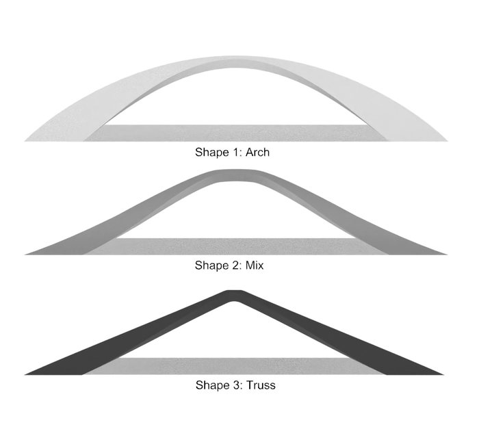
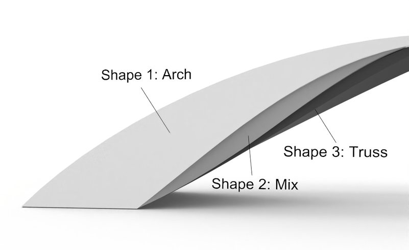
3. Design calculations
To determine an optimized cross-sectional area, analytical calculations are done using the moment of the beam. The following parameters are used: Load (P) = 71200 N, Span (L) = 864 mm, Depth (d) = 190 mm, Compressive strength (f'c) = 130 MPa, Rebar tensile strength (fy) = 400 MPa, and the rebar diameter (db), to solve for the compressive resistance (Cr), tensile resistance (Tr), Area concrete (Ac), Area steel (As), and the development length (ld).
M = P⋅L/2 = (71200 N)(864 mm)/2 = 30758400 Nmm
Cr = Tr = M⋅d = (30758400 Nmm)(190 mm) = 161886.316 N
Ac = Cr⋅f'c = (161886.316 N)(130 MPa) = 1245.23 mm2
As = Tr⋅fy = (161886.316 N)(400 MPa) = 404.716 mm2
Therefore, 4x10M longitudinal bars are selected, such that the provided
As = 4(100 mm2) = 400 mm2 and db=10 mm
Since we would like to induce a tensile failure, the cross sectional area of concrete is selected to be 2000 mm2, providing a factor of safety of 1.6 against crushing.
Using FHWA guidelines, the minimum development length shall be taken as
ld = 12 db = 12(10mm) = 120 mm
The number of rebars and the cross sectional area of concrete were then inputed into the Grasshopper script and the beam shapes were then tested using a finite element analysis.
4. Finite Element Analysis
Fusion 360 is used to perform the FEA on each shape, assuming a pin-pin condition to only test the compressive part of the beam. The objective of this analysis is to compare structural compliances as a basis for selecting the optimal beam shape.
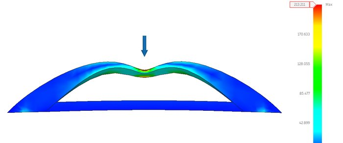
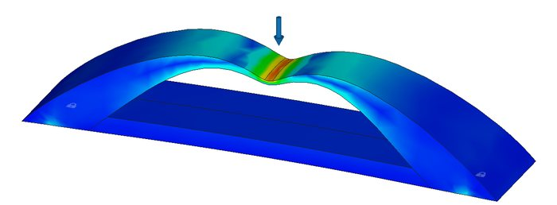
Shape 1: Arch
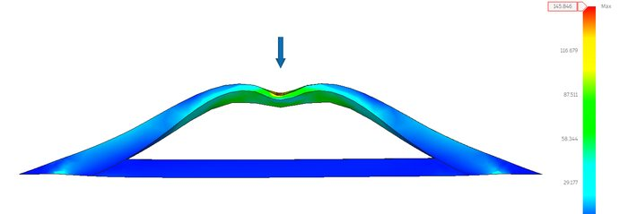
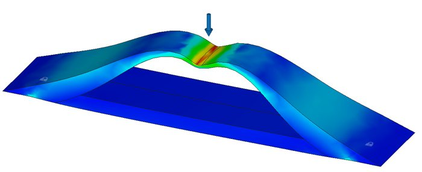
Shape 2: Mix
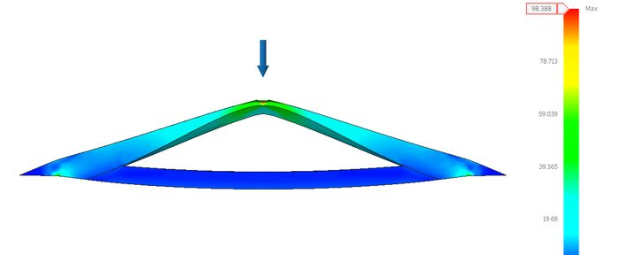
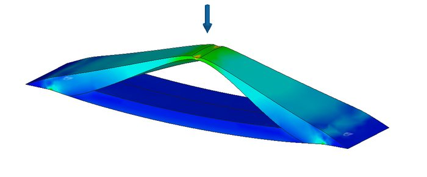
Shape 3: Truss
| Shape 1: Arch | Shape 2: Mix | Shape 3: Truss | |
|---|---|---|---|
| Von Misses Stress (MPa) | 189.317 | 126.886 | 102.514 |
| Max Deflection (mm) | 0.971 | 0.505 | 0.426 |
| Structural Compliance (Defl/Load) (mm/kN) | 0.013638 | 0.00709 | 0.005983 |
Since shape 3 experiences the lowest structural compliance while also exhibiting the lowest Von Mises stress, it is selected as the UHPC element shape.
5. Final Design Details
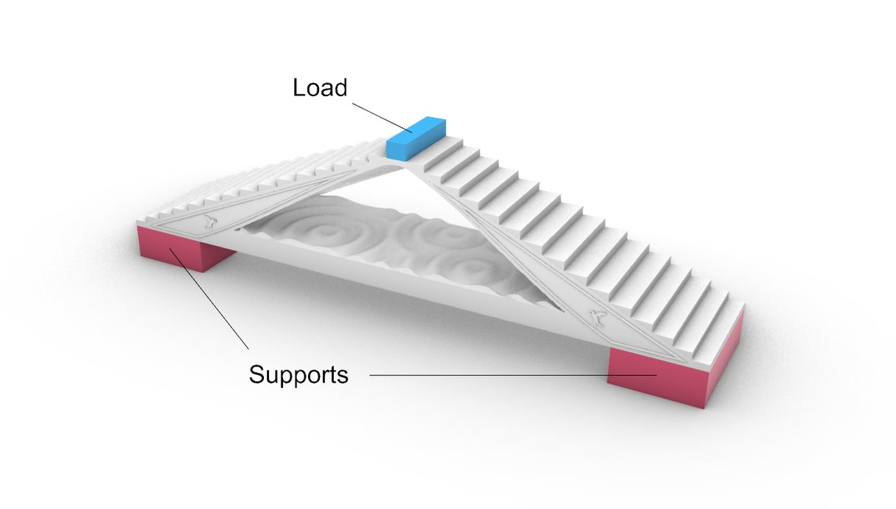
Once the final beam shape was selected, the final architectural details were added. Since the final beam shape resembled the Rialto Bridge in Venice, Italy, inspiration was drawn from it. Initially, four main details were added on to the beam, an extruded perimeter along the sides, four archangels on each side, stairs along the top of the beam, and a water pattern on the concrete cover. However, the archangels and the water pattern were later removed to simplify construction. The final volume of the beam is 0.0127 m3, a 69.3% material reduction from the initial design domain volume of 0.0413 m3.
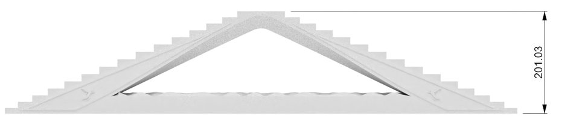
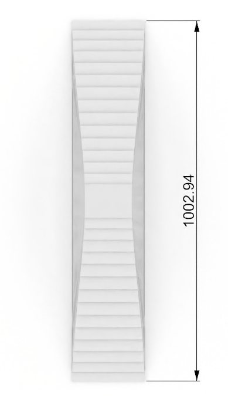
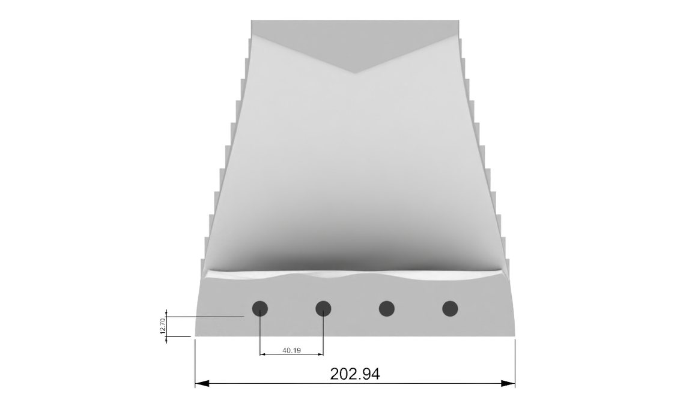
6. Mold Design / Fabrication
Due to the complexity of the shape, we decided to fully 3D print the mold. We designed it so that it can be assembled and dissasembled in pieces, like a 3D puzzle. In the end, 42 panels and 2 supports were printed to create the mold.
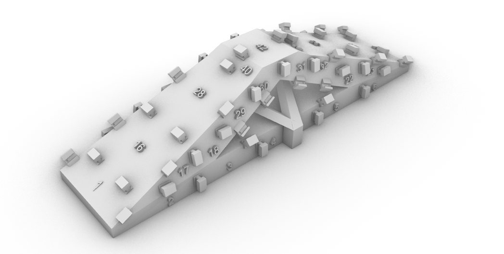
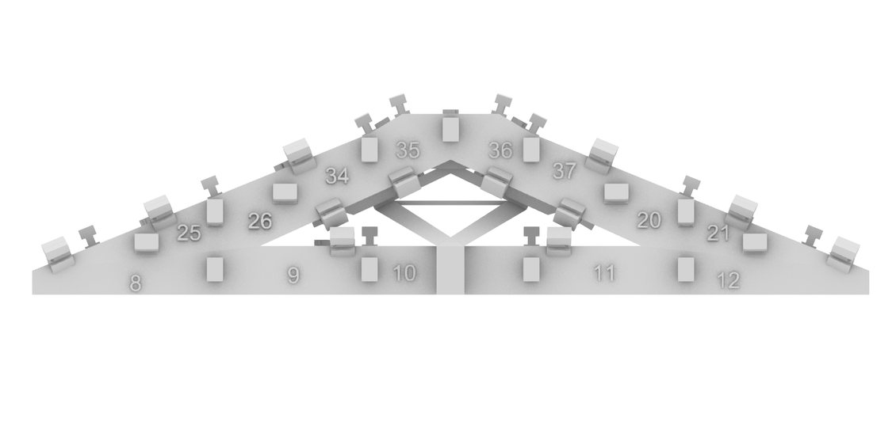
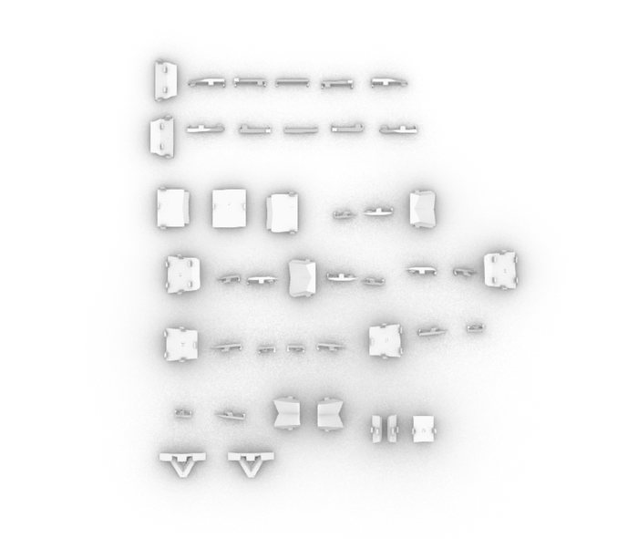
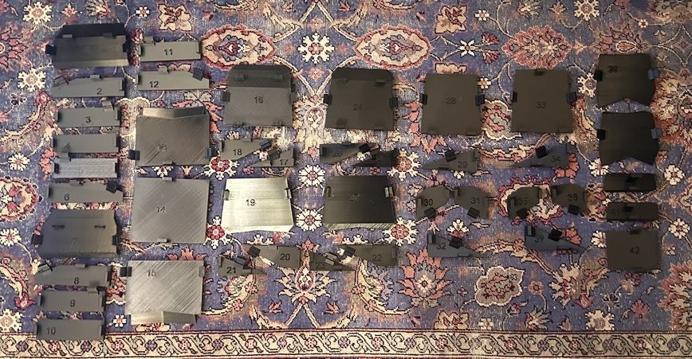
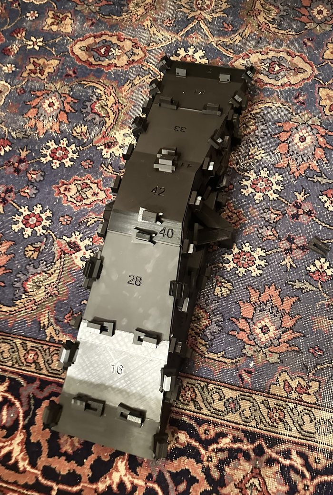
7. UHPC Casting / Demolding
Since the mold was designed in pieces, we were able to cast the concrete layer by layer, stomping and vibrating the concrete as we built upwards. Plastic tape was used on certain interior seams to reduce the amount of leakage. We let the concrete sit for 3 days before demolding and then let it cure for 25 days in a curing room. Three concrete cubes were also made for compressive testing.
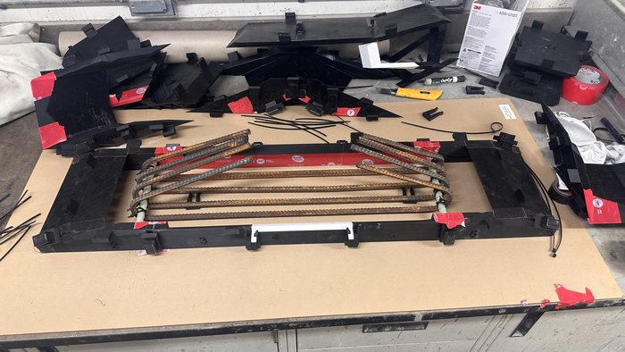
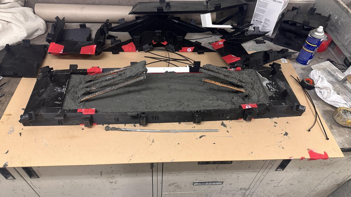
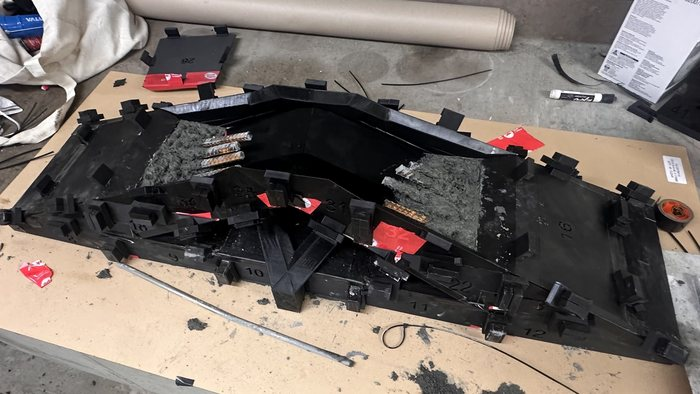
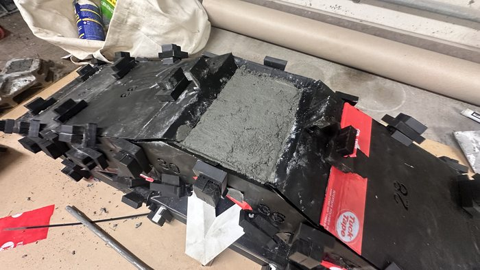
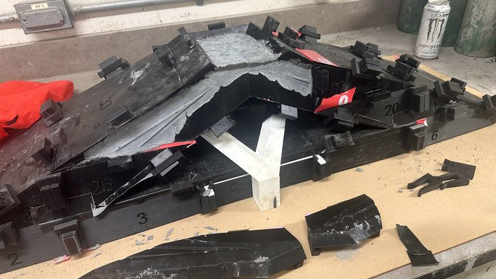
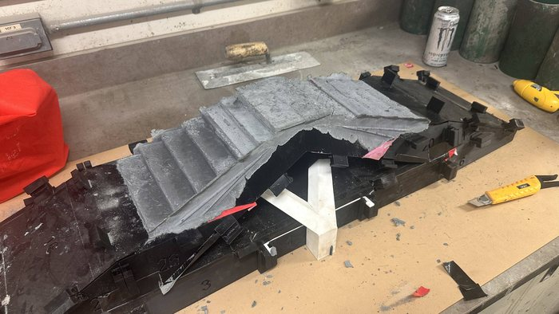
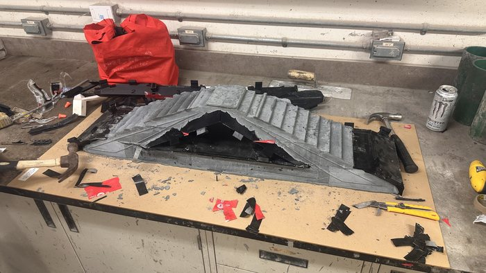
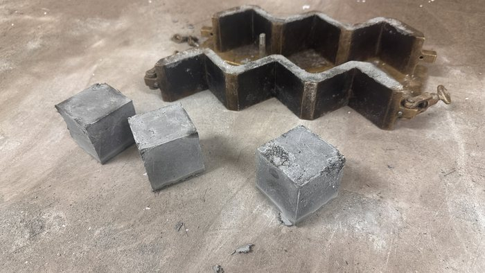
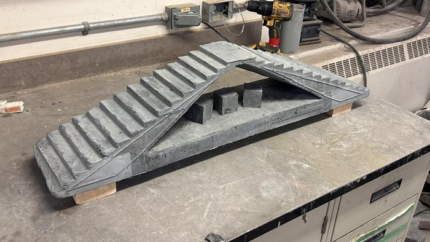
8. Failure Prediction / Experimental Results
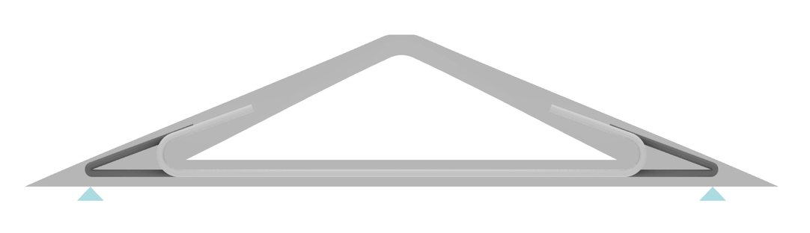
Unfortunately, we designed the rebar to extend all the way to the support points with a sharp bend (dark grey) and during construction realized that this would be impossible to create. Thus leaving us with the rebar unable to extend to the supports, which ended up governing the failure mode. In the end the beam was able to carry up to 44.48 kN (10 kips) before failing.
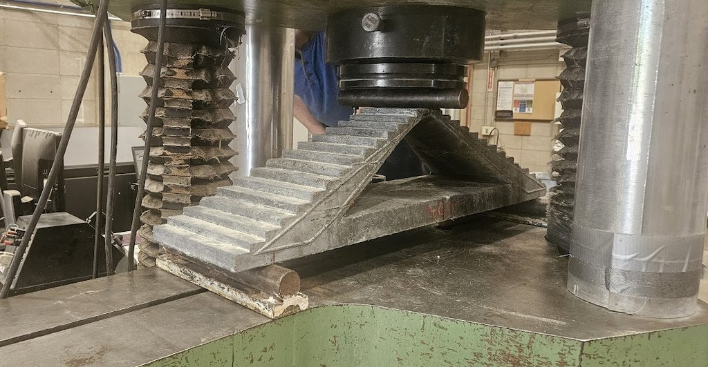
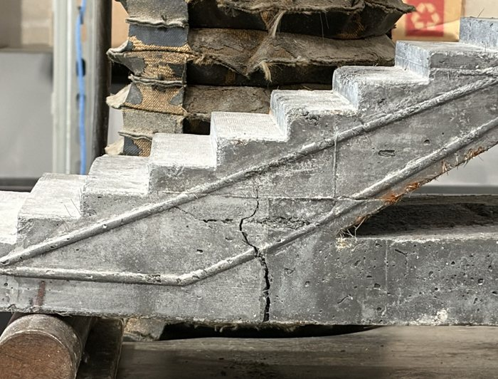
Although our beam did not perform up to its expectations, this whole experience has taught us a lot about UHPC design, as well as designing for construction. We are very glad to have attended the 4IIS-UHPC and had the opportunity to speak to so many talented engineers, researchers, students, and contractors in the UHPC industry